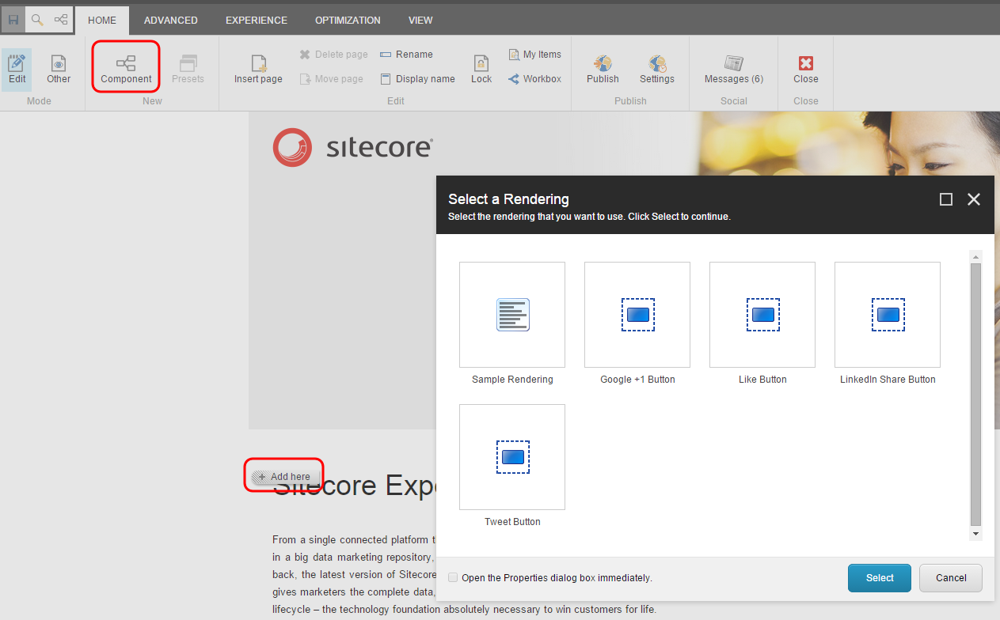

Atomic design met Pattern Lab
24-01-2017 - Bram Smulders
World Wide Web
- Gemakkelijk informatie delen
- Vergelijkbaar met het uitgeven van geschreven informatie
- Bedrijven vertaalden hun printmedia direct naar het web
- Resultaat: 1 dimensionale paginas
- Makkelijk voor (web)designers
De webpagina
25 jaar verder en de pagina zit nogsteeds ingebakken
We willen een website met vijf pagina’s lanceren in augustus
We willen een redesign van onze corporate website met 4000 pagina’s
Bram, kan je eens inschatten wat het kost om deze homepagina te bouwen?
We verdrinken in een zee van verschillende devices
Redesign = no-go
- Na de launch komen de eerste klachten
- Redesign zorgt voor een nieuwe leercurve
- Gebruikers worden terug naar 0 getrapt
Inhoud modulariseren
Sitecore experience editor

2. Atomic design principe